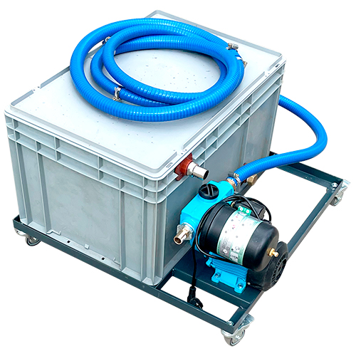

МОДЕЛИ AQUABLAST STANDARD
Обеспечивают высокую эффективность и упрощённую обработку деталей разных размеров, адаптируясь под потребности мастерских и производства
AQUABLAST STANDARD 1100
Aquablast Standard 1100 — базовая модель серии Standard, оснащённая одной дверцей и корпусом компактного дизайна, что делает её подходящей для ограниченных по размеру помещений. Несмотря на небольшой размер, установка обеспечивает высокую производительность при очистке различных деталей, сохраняя стабильное качество очистки. Эта модель идеально подходит для небольших мастерских, которым необходим эффективный и гибкий вариант обработки деталей.
ЦЕНА
От €5,360 (чёрная сталь)
От €7,560 (нержавеющая сталь AISI 304)
Основные характеристики:
- Внутренняя рабочая решётка: чёрная сталь или нержавеющая сталь AISI 304
- Стеклоочиститель
- Система подачи воды на стеклоочиститель
- Система отвода воды с дверей
- Система контроля давления воздуха (без индикатора)
- 25 кг абразивного порошка (стеклянные шарики)
Технические характеристики:
- Рабочее пространство: 1100×900×900 мм (Ш×В×Г)
- Материал: холоднокатаная сталь толщиной 1,5–2 мм
- Насос средней мощности без принудительного смешивания
- Максимальное энергопотребление: 1,5 кВт
- Напряжение питания: 220 В, 50 Гц
- Рабочее давление: 5–8 атм
- Внешние размеры: 1385×885×1895 мм + ножки 100 мм
- Вес: 220 кг
AQUABLAST STANDARD 1300
Aquablast Standard 1300 предназначен для обработки автомобильных деталей, таких как двигатели и коробки передач. Оснащён двойной дверной системой, которая позволяет загружать детали как с вращающегося стола, так и с противоположной стороны. Это повышает гибкость и удобство. Кроме того, стол можно установить с любой стороны машины, что облегчает и ускоряет процесс очистки.
ЦЕНА
От €6,240 (чёрная сталь)
От €8,540 (нержавеющая сталь AISI 304)
Основные характеристики:
- Внутреннее рабочее сито: чёрная сталь или нержавеющая сталь AISI 304
- Стеклоочиститель
- Система подачи воды на стеклоочиститель
- Система отвода воды с дверей
- Система контроля давления воздуха (без индикатора)
- 25 кг абразивного порошка (стеклянные шарики)
Технические характеристики:
- Рабочее пространство: 1300×1000×1000 мм (Ш×В×Г)
- Материал: холоднокатаная окрашенная сталь 1,5–2 мм
- Насос средней мощности без принудительного перемешивания
- Максимальное энергопотребление: 1,5 кВт
- Напряжение питания: 220 В, 50 Гц
- Рабочее давление: 5–8 атм
- Внешние размеры: 1450×1060×1915 мм + ножки 100 мм
- Вес: 245 кг
AQUABLAST STANDARD 1600
Самая большая машина серии Standard — Aquablast Standard 1600 предназначена для обработки крупногабаритных деталей и позволяет работать одновременно до двух операторов. Машина имеет удобный доступ с обеих сторон, что исключает необходимость вращать детали внутри оборудования. Это повышает эффективность, производственный процесс и безопасность при длительной эксплуатации.
ЦЕНА
От 11 080€ (нержавеющая сталь AISI 304)
Основные характеристики:
- Внутренняя рабочая решетка: черная сталь или нержавеющая сталь AISI 304
- Щётка для ветрового стекла
- Система подачи воды на ветровое стекло
- Система отвода воды с дверей
- Система контроля давления воздуха (без индикатора)
- 25 кг абразивного порошка (стеклянные шарики)
Техническая спецификация:
- Рабочее пространство: 1600×1200×1100 мм (ширина × высота × глубина)
- Материал: окрашенная нержавеющая сталь толщиной 1,5–2 мм
- Насос высокой мощности с принудительной системой перемешивания
- Максимальное энергопотребление: 1,5 кВт
- Питание: 220 В, 50 Гц
- Рабочее давление: 5–8 атм
- Габаритные размеры: 1760×1350×2015 мм + ножки 100 мм
- Вес: 300 кг
ДОПОЛНИТЕЛЬНОЕ ОБОРУДОВАНИЕ
Система очистки и
рециркуляции воды

Позволяет очищать стеклянные детали с использованием чистой воды без подключения к городской водопроводной сети
620€
Барабан для мелких деталей

Предназначен для массовой очистки мелких деталей и оборудования от ржавчины, масла и сажи
550€
Мелкая сетка

Сетка 3×40 мм предотвращает потерю мелких деталей во время очистки
210€
Система вентиляции

Улучшает видимость обрабатываемой детали во время работы
385€
Корзина для мелких деталей

Корзина из нержавеющей стали позволяет одновременно очищать несколько мелких деталей
240€
Держатель
пистолета